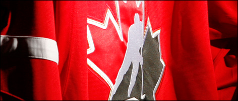
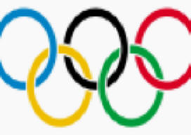

| Year | Location of Event | Standing |
|---|---|---|
| 2002 | Gothenburg / Karlstad / Jönköping, Sweden | 6th place |
| 2003 | Helsinki / Tampere / Turku, Finland | Gold |
| 2004 | Prague / Ostrava, Czech Republic | Gold |
| 2005 | Innsbruck / Vienna, Austria | Silver |
| 2006 | Riga, Latvia | 4th place |
| 2007 | Moscow / Mytishchi, Russia | Gold |
| 2008 | Quebec City / Halifax, Canada | Silver |
| 2009 | Bern / Kloten, Switzerland | Silver |
| 2010 | Cologne / Mannheim / Gelsenkirchen, Germany | 7th place |
| 2011 | Bratislava / Košice, Slovakia | 5th place |
| 2012 | Helsinki, Finland / Stockholm, Sweden | 5th place |
| 2013 | Stockholm, Sweden / Helsinki, Finland | 5th place |
| 2014 | Minsk, Belarus | 5th place |
| 2015 | Prague / Ostrava, Czech Republic | Gold |
© Copyright Centennial College - COMP213 - Web Interface Design - Summer 2015